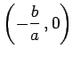
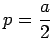
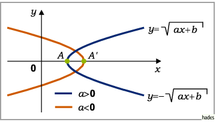

Inhalt Index DeskTop Bronstein
Funktionen und ihre Darstellung Irrationale Funktionen
Die zwei Funktionen
beschreiben eine Parabel mit der x-Achse als Symmetrieachse. Der Scheitel A liegt bei , der Parameter ist . Definitionsbereich und Verlauf der Kurve hängen vom Vorzeichen von a ab.

(Ausführlicher s. Parabel.)